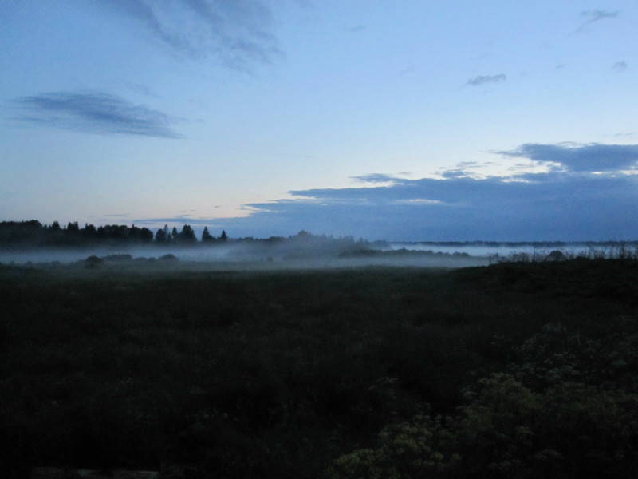
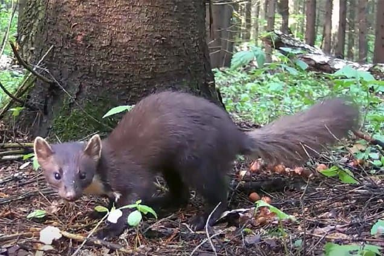

Однажды пошел я за грибами. Тут Волосовский район не причем. Поскольку был несезон, в их наличии сомневался. Потому зашел в лес только "нос сунуть".
Сделав несколько шагов вглубь и убедившись в отсутствии грибов, развернулся и пошел обратно на свет. Вышел, увидел знакомый пейзаж, как показалось, и пошел через поле обратно к дому.
Через какое-то время с удивлением обнаружил вековой дуб, стоящий посреди поля. Подивившись, что ранее его не замечал, продолжил движение. Подойдя к домам стало ясно, что не понимаю где нахожусь. Стал двигаться по-наитью, все больше удивляясь незнакомому месту. И люди куда-то подевались.
Через несколько часов, принял решение, что нахожусь с другой стороны леса в районе известного, но очень отдаленного населенного пункта. Следуя этой логике нашел ведущую к дому дорогу и вышел наконец, потратив еще часа полтора.
На следующий день рассказываю соседке-старожилке этих мест о невероятном случае. Не успел начать рассказ, как она засмеялась и без всякого уточнения сказала точно куда я вышел. Я начал протестовать, объясняя, что это невероятно. Что ее привело в абсолютную веселость, поскольку за свою жизнь она этот рассказ "один в один" слышит невпервые.
Как это понимать до сих пор не знаю. Тем более, что впоследствии бывал в том населенном пункте, но попытки еще раз увидеть тот дуб не увенчались.

Было еще происшествие. В том же лесу собирали грибы втроем. Уже двинулись к дому, и тут слышим сзади нас упал какой-то мешок. Разворачиваемся и видим некого зверька - на пожухлых листьях разлегся. Шёрстка бархатная, черненькая, здоровьем отливающая. Зубки остренькие сахарные. Глазки - глянцевые черные бусинки, на нас зыркают.
Это была куница.
Не успели мы прийти в себя, зверек взвился вверх штопором, метра на полтора. Опять упал-лежит, нам улыбается. Мурашки по позвоночнику побежали вверх.
Когда она опять взвилась в небо сверлом с визгом, мы энергично направились куда шли. А куница нас догнала и опять выделывать всякие безобразия.
Насилу убежали.
Не иначе, на этот раз - кикимора куницей обернулась.
Но, ведь чудес не бывает!?
Было бы болото, а черти найдутся!
